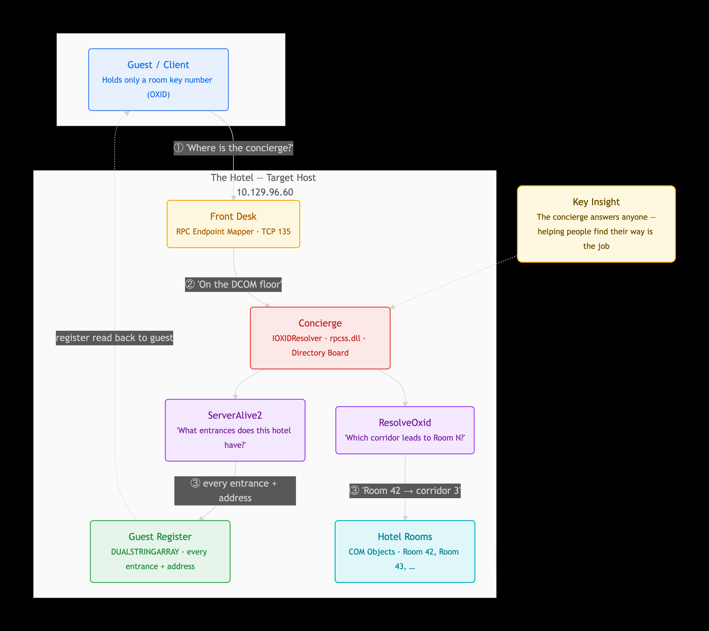

Operational Ledger
All Target Writeups

HTB: Connected
Unauthenticated FreePBX SQL Injection → Malicious Cron Injection

HTB: Facts
Mass Assignment CVE → MinIO S3 credential theft → Sudo Facter privilege escalation. Full attack chain on a Camaleon CMS instance.
HTB: DevHub
MCPJam Inspector RCE → SSH tunneling to internal Jupyter → debug API extraction of root SSH keys.

HTB: Reactor
React2Shell RCE (CVE-2025-55182) → SQLite credential reuse → Node.js debugger exploitation for root.
HTB: Active
GPP password recovery → Kerberoasting the Administrator account → full domain takeover via SMB service execution.

HTB: APT
RPC and SMB enumeration, backup archive analysis, and an Active Directory attack path documented with screenshots.
/Screenshot_1448-05-13_at_9.00.26_PM.png)
HTB: TombWatcher
Assumed-breach Active Directory chain featuring targeted Kerberoasting, delegated group membership, gMSA password retrieval, and ownership abuse.
HTB: Browsed
Browsed is a medium-difficulty Linux machine centred around abusing browser extension functionality to access internal services. By uploading a malicious Chrome extension, we intercept a developer’s browsing activity and uncover an internal Gitea instance hosting a Flask application..

HTB: Forest
AS-REP Roasting → BloodHound → Exchange Permissions → Full DCSync domain compromise.
HTB: Busqueda
Python Searchor Command Injection → Gitea credential harvesting → SUID bin/bash escalation.
ActiveDirectory SyncNode
Abusing local certificate allocation authorities to achieve forest-wide domain takeover via ADCS ESC8.